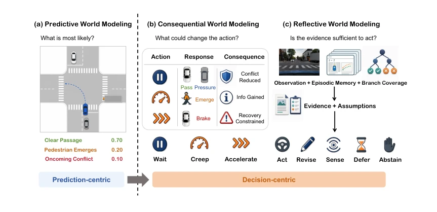
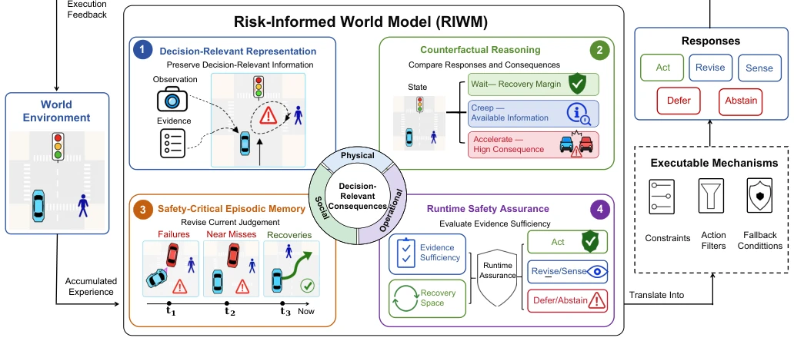

Rethinking World Models for Safety-Critical Embodied Systems
Kailang Ma, Heye Huang, Inhi Kim, Kitae Jang abspdf
论文点评Review
这篇论文像是一剂针对当前 World Model 热潮的清醒剂。现在的 WM 研究卷得飞起，GAIA-2、UniSim 等模型画面逼真得像真的一样，但作者一针见血：好看没用，安全才重要。就像开车，预测出最可能的路况是绿灯，但万一有个鬼探头呢？概率高不代表安全。RIWM 这概念挺性感，把世界模型从“算命先生”变成“安全顾问”，强调后果而非概率，从预测中心转向决策中心。不过，光有框架没实验，感觉像是在画饼，挑战部分列了一堆，看来离落地还远，属于典型的“概念先行”型论文，需要后续验证其实际效能。
This paper serves as a sobering agent against the current hype surrounding World Model. Current WM research is intensely competitive; models such as GAIA-2 and UniSim produce visuals so realistic they appear real, yet the author hits the mark: aesthetics are useless, safety is paramount. Like driving, predicting the most probable road condition as a green light, but what if an unexpected emergence occurs? High probability does not equate to safety. The concept of RIWM is quite compelling, transforming world models from "fortune tellers" into "safety consultants," emphasizing consequences over probability and shifting from prediction-centric to decision-centric. However, with only a framework and no experiments, it feels like drawing a cake (an empty promise); the challenges section lists numerous items, suggesting it is far from deployment. It belongs to a typical "concept-first" paper, requiring subsequent validation of its actual efficacy.
研究动机Motivation
现有 WM 追求 likelihood 和视觉保真度 (Ha & Schmidhuber, 2018; Russell et al., 2025)，但安全关键系统面临“稀有性诅咒”(Liu & Feng, 2024)。低概率高后果事件（如鬼探头）决定生死，而现有模型往往忽略。此外，动作干预影响未来 (Sun et al., 2022)，但现有预测常假设策略无关。长时累积风险也被忽视 (Meng et al., 2025)。因此需要重新思考 WM 的认知层级，从预测转向决策。现有工作无法区分高概率但低后果与低概率高后果，导致决策边界模糊。概率本身不能表达分支对当前动作的重要性，标量风险评分同样模糊了重要决策结构。
Existing WM pursue likelihood and visual fidelity (Ha & Schmidhuber, 2018; Russell et al., 2025), but safety-critical systems face the "curse of rarity" (Liu & Feng, 2024). Low-probability high-consequence events (such as unexpected emergence) determine life and death, while existing models often overlook them. Additionally, action interventions affect the future (Sun et al., 2022), yet existing predictions often assume policy independence. Long-term cumulative risks are also neglected (Meng et al., 2025). Therefore, the cognitive hierarchy of WM needs to be rethought, shifting from prediction to decision. Existing work fails to distinguish between high-probability low-consequence and low-probability high-consequence scenarios, resulting in blurred decision boundaries. Probability itself cannot express the importance of branches to current actions, and scalar risk scores similarly obscure important decision structures.

Fig. 1. Cognitive progression across predictive, consequential, and reflective world modeling, from a prediction-centric to a decision- centric orientation.
Proposes RIWM, divided into four layers of capability. 1. Decision-relevant representation: not merely fidelity, but retaining evidence that alters action boundaries (e.g., occlusion, right-of-way, escape space). 2. Counterfactual reasoning: dynamically allocate computational resources, focusing on credible alternative branches rather than uniform simulation, supporting acting, revising, sensing, deferring, abstaining. 3. Safety-critical memory: store failures, near misses, and their consequences, supporting runtime correction, emphasizing interaction structure over appearance. 4. Runtime safety guarantee: assess whether evidence is sufficient, triggering defer or abstain; unlike MPC or CBF, RIWM provides decision-relevant information rather than direct constraints. In the overall process, memory looks backward, reasoning looks forward, ensuring concurrency. Evidence sufficiency determines action. Physical, social, and operational consequences serve as independent domains, with cognitive uncertainty used to bound evidence strength.

Fig. 2. Conceptual architecture of a risk-informed world model for safety-critical embodied systems.
This paper primarily proposes the conceptual framework RIWM, without providing specific datasets, baseline comparisons, or quantitative experimental results. The text only points out three structural mismatches through theoretical analysis (Likelihood-risk, Prediction-intervention, Horizon-accumulation) and lists open challenges. The authors admit that transitioning from concept to paradigm requires solving difficulties such as consequence definition and causal assumption verification. Therefore, it currently lacks empirical support and belongs to a directional paper. Future work needs to validate the actual efficacy of RIWM in embodied systems such as autonomous driving; currently, it remains at the theoretical architecture level. Challenges mentioned in the text include how to define decision-relevant consequences, when action conditions support counterfactual reasoning, when to trust memory, etc., all of which are open questions.